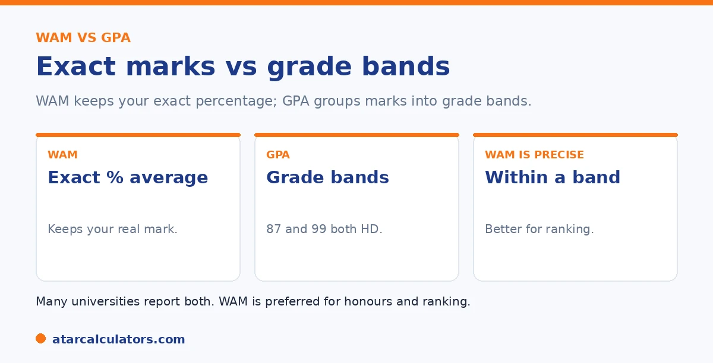

Here is the short version. Your WAM, or Weighted Average Mark, is the average of your actual marks, out of 100, weighted by credit points. So it keeps your exact result. Your GPA, or Grade Point Average, converts each mark into grade points, usually on a 7-point or 4-point scale, then averages those, which groups marks into bands and loses some detail. Most Australian universities use WAM as the main measure, with GPA used for some postgraduate and overseas purposes.
WAM and GPA are easy to confuse, since both turn your results into a single number. But they are built differently, and the difference matters.
Below is the full comparison. To work out your own, use our WAM calculator.
Key takeaways
- WAM is the average of your actual marks, out of 100.
- GPA averages grade points, usually out of 7.
- WAM keeps your exact mark; GPA groups marks into bands.
- Most Australian universities use WAM as the main measure.
- GPA is used for some postgraduate and overseas purposes.
- They can tell slightly different stories about the same results.
What a WAM is
Your WAM is a weighted average of your actual marks. Each unit's mark, out of 100, is weighted by its credit points, then averaged. So a WAM of 78 means your credit-weighted average mark is 78.

The key feature is that a WAM keeps your exact result. A mark of 88 and a mark of 99 are treated differently, because the actual number is used. See our guide on how to calculate your WAM.
What a GPA is
A GPA works differently. Each mark is first converted into a grade, such as high distinction or credit. And each grade is worth a set number of grade points. Those grade points are then averaged, weighted by credit points.
Because marks are grouped into grades first, a GPA loses some detail. A mark of 85 and a mark of 99 might both become a high distinction, worth the same grade points, even though the marks differ a lot.
WAM and GPA side by side
Here is how the two compare directly.
| WAM | GPA | |
|---|---|---|
| What it is | Average of your actual marks | Average of grade points |
| Scale | 0 to 100 | Usually 0 to 7, or 0 to 4 |
| Precision | Keeps your exact mark | Groups marks into bands |
| Used for | Honours, scholarships, most ranking | Some postgrad and overseas use |
A general comparison. Each university sets its own policy, so always check yours.
So the main trade-off is detail versus simplicity. A WAM keeps your exact marks, while a GPA gives a simpler grade-based summary. See our guide on ATAR versus GPA.
Want to work out your WAM?
Try the WAM calculator →Which one does your university use?
In Australia, WAM is the main measure at most universities. It is what is usually used for honours entry, scholarships, prizes, and ranking students. So for most purposes here, your WAM is the figure that counts.
GPA still appears, often for postgraduate applications, some scholarships, and comparisons with overseas systems, where GPA is more common. So it is worth knowing both. See our guide on what counts as a good WAM.
They can tell different stories
Because they are built differently, your WAM and GPA can tell slightly different stories about the same results. Strong marks near the top of each band can look better in a WAM. That keeps the detail, than in a GPA, which rounds to the grade.
So if you are comparing offers or requirements, check which measure is being asked for. The same transcript can produce a high WAM and a less impressive-looking GPA, or the reverse. Knowing which one matters helps you read the requirement correctly.
A concrete case makes the difference clear. Imagine a student who consistently scores in the low 80s, say marks clustered around 80 to 83. On a seven-point scale where a High Distinction (7) starts at 85, every one of those results rounds down to a Distinction. So the GPA sits at a solid but unspectacular 6.0. The WAM. That keeps the actual marks, reports around 81, comfortably in Distinction territory and only a few marks short of the HD band. Now compare a student whose marks swing between 90s and low 60s but average the same 81. Their WAM is identical. But their GPA may look quite different because some units land in the top band and others drop two grades. This is why the two measures can rank the same students differently, and why an application that asks for one should not be answered with the other. A high WAM does not always translate to an impressive GPA. And a strong GPA can hide how close, or how far, your actual marks sit from the next band.
Why WAM is more granular
The key difference is detail. WAM keeps your exact marks, so a 78 and a 71 are treated differently. GPA groups both into the same grade band and the same grade point, so they look identical. This makes WAM more granular than GPA.
So WAM captures the difference between a strong Distinction and a bare one, while GPA does not. If you scored well within a band, that shows up in your WAM but not your GPA, which is one reason the two numbers can tell slightly different stories.
Which is used for honours
Most Australian universities use WAM, not GPA, to determine honours classes. First Class, and the Second Class divisions, are usually set at WAM thresholds, because WAM’s granularity suits the fine distinctions honours requires.
So for honours, your WAM is usually the number that counts. See WAM requirements for honours for the typical thresholds, which sit around 80 for First Class at many universities.
Converting WAM to GPA
You cannot convert a single WAM figure directly to a GPA, because a WAM does not tell you the grade in each unit. Instead, you map each unit’s grade to its grade point, then take the credit-weighted average. So conversion works from your grades, not your WAM.
This is why a rough WAM-to-GPA rule of thumb is only approximate. For an accurate GPA, work from your unit grades. See how the GPA scale works.
Can WAM and GPA differ a lot?
They can differ noticeably. Because GPA compresses marks into bands, a student who consistently scores at the top of each band has a strong WAM but a GPA no different from someone at the bottom of the same bands. Their WAMs differ; their GPAs do not.
So it is normal for your WAM and GPA to give slightly different impressions. Neither is wrong; they simply measure in different ways, one in marks and one in grade points.
Is WAM more accurate?
WAM is not more accurate, but it is more detailed. It preserves the full information in your marks, while GPA deliberately simplifies them into bands. Which is better depends on the purpose: WAM for fine distinctions, GPA for a simple summary or an international audience.
So rather than one being right, each suits a different job. Australian universities lean on WAM for their own decisions, and GPA is useful when a simple, portable number is needed.
Which does your university use?
Most Australian universities calculate a WAM as their main measure, and many also report a GPA. Some, such as Sydney and Melbourne, lead with WAM and do not emphasise an official GPA, while others report both. So which you see depends on your university.
The practical rule is to use whichever your program asks for. For honours and internal decisions, that is usually your WAM; for some external or overseas applications, a GPA.
The practical takeaway
The practical takeaway is to know both numbers and use the right one for the audience. Lead with your WAM for honours and anything internal to an Australian university, and use a GPA when an external body, such as an overseas institution, expects one.
That way your strong results are read correctly, whether by a system that works in marks or one that works in grade points.
The bottom line
The bottom line is that WAM and GPA are two ways of summarising the same results, one in exact marks and one in grade bands. WAM is more granular and is what most Australian universities use for honours and their own decisions; GPA is a simpler, more portable number useful for external and overseas audiences.
So know both, and use the right one: your WAM for anything internal to your university, and a GPA when a program abroad expects one. Neither is better; they simply suit different jobs.
Common questions
What's the difference between WAM and GPA?
Your WAM is the average of your actual marks, out of 100, so it keeps your exact result. Your GPA averages grade points, usually out of 7, which groups marks into bands and loses some detail. Most Australian universities use WAM as the main measure.
Is WAM or GPA better?
Neither is better; they measure differently. A WAM keeps your exact marks, while a GPA gives a simpler grade-based summary. In Australia, WAM is used more widely, but GPA appears for some postgraduate and overseas purposes.
Does my university use WAM or GPA?
Most Australian universities use WAM as the main measure, for honours, scholarships, and ranking. GPA is used for some postgraduate applications and overseas comparisons. Check your own university's policy to be sure which applies.
Can WAM and GPA give different results?
Yes. Because a GPA groups marks into grade bands, strong marks near the top of a band can look better in a WAM. That keeps the detail. So the same results can produce a high WAM and a less impressive GPA, or the reverse.
Why does Australia use WAM more than GPA?
WAM keeps your exact marks, which gives a more precise ranking for honours, scholarships, and prizes. So most Australian universities prefer it. GPA is more common overseas, which is why it appears for international comparisons.
Work out your WAM
Estimate your WAM from your marks and credit points. Free, and no signup.
Open the WAM calculator →Related guides
This guide is general information for students, not formal academic advice. WAM and GPA policies, grade bands and honours thresholds vary by university and faculty, and can change. Failed units, year weighting and which units count are all set by each university. Always confirm with your own university's official grading and WAM policy, such as the University of Sydney or your own institution. Reviewed by the ATARCalculators Editorial Team.